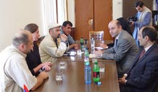

МИРОТВОРЧЕСКИЙ ДЕСАНТ В ЕРЕВАНЕ
3 октября 2005 года председатель Постоянной комиссии НС Армении по обороне, нацбезопасности и внутренним делам Мгер Шахгельдян принял председателя общественной организации "Кавказский центр миротворческих инициатив" Георгия Ваняна, директора студии "РЕ" Мамуку Купарадзе, журналиста газеты "Азербайджан сегодня", писателя-публициста Сеймура Байджана, находящихся в Армении в рамках проекта "Миротворческий десант". На встрече участвовал также советник спикера НС Айказ Гахриян.
Представляя свою программу, гости отметили, что их цель – активизировать контакты в странах региона посредством общественных организаций, отдельных личностей, построить диалог вокруг существующих проблем, способствовать урегулированию региональных конфликтов с помощью народной дипломатии В 10 областях Армении были проведены совместные выставки картин молодых художников из Азербайджана, Армении и Грузии, посвященные Памяти жертв конфликтов на Южном Кавказе. Состоялись показы и обсуждению документального фильма "Карабах", снятого грузинскими кинематографистами. Участники встречи передали свою благодарность Председателю Национального Собрания Армении Артуру Багдасаряну за поддержку региональной конференции "Южнокавказская интеграция: Альтернативный старт", которая прошла в июле сего года и создала стартовую плошадку для всех последующих проектов. Они сообщили, что в ноябре в Ереване пройдет Южнокавказский джаз-фестиваль, затем Миротворческий десант будет продолжен в Карабахе.
М. Шахгельдян приветствовал осуществление программы, признавая за общественными организациями и народной дипломатией важную роль в плане урегулирования конфликтов. В этом контексте он отметил также значение парламентских связей и в частности, рассказал о встречах на сессиях Парламентской Инициативы Южного Кавказа, которые проходят при модерации британской неправительственной организации ЛИНКС.
Представляя свою программу, гости отметили, что их цель – активизировать контакты в странах региона посредством общественных организаций, отдельных личностей, построить диалог вокруг существующих проблем, способствовать урегулированию региональных конфликтов с помощью народной дипломатии В 10 областях Армении были проведены совместные выставки картин молодых художников из Азербайджана, Армении и Грузии, посвященные Памяти жертв конфликтов на Южном Кавказе. Состоялись показы и обсуждению документального фильма "Карабах", снятого грузинскими кинематографистами. Участники встречи передали свою благодарность Председателю Национального Собрания Армении Артуру Багдасаряну за поддержку региональной конференции "Южнокавказская интеграция: Альтернативный старт", которая прошла в июле сего года и создала стартовую плошадку для всех последующих проектов. Они сообщили, что в ноябре в Ереване пройдет Южнокавказский джаз-фестиваль, затем Миротворческий десант будет продолжен в Карабахе.
М. Шахгельдян приветствовал осуществление программы, признавая за общественными организациями и народной дипломатией важную роль в плане урегулирования конфликтов. В этом контексте он отметил также значение парламентских связей и в частности, рассказал о встречах на сессиях Парламентской Инициативы Южного Кавказа, которые проходят при модерации британской неправительственной организации ЛИНКС.